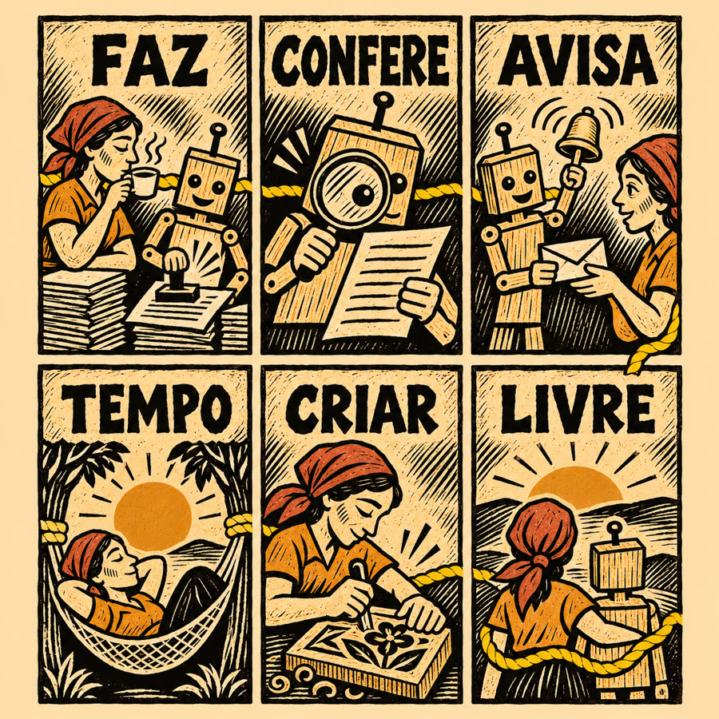

Every video you make in the same style, just by changing the topic
You see a video with a look you love, but can't recreate it: every video you make comes out looking different, and your channel ends up with no identity. With the style-to-skill method, you can make as many videos as you want in the style of a video you admire, just by changing the topic. I'll show you how.
You see a video with a visual style you love, try to repeat it, and every video you make turns out looking different. style-to-skill is a free kit that studies the visual language of that video (colors, lettering, composition, movement) and saves everything in a skill, an instruction file that Claude Code or Codex follows. Then you just tell it the topic, and the skill makes the whole video with the same look: storyboard, animated scenes, narration in one voice, a soundtrack, and a review before it says “ready.” It’s for people who make short videos and don’t program; you need Claude Code or Codex, an image generation tool, and three free programs on your computer.
Every request to AI starts from scratch. It doesn’t remember the colors, lettering, or framing from the previous video. You write “cordel style,” and each time it understands something different. The result: one video looks one way, the next looks another, and your channel has no identity.
What the skill studies: the visual language
Colors with each exact code, typeface, where the subject sits in the frame, texture, light, how the camera moves, how one scene transitions to the next, the rhythm, and what would break the style.
What it never copies: the content
Characters, faces, logos, brands, text, dialogue, and the story from the reference video are left out. The subject and dialogue are always yours.
Where the style is stored
In a “style bible” inside the skill. Every image request uses the same description, so the tenth video looks like the first.
Words you’ll see here
Skill
a folder with an instruction file (and scripts) that teaches Claude Code or Codex to do a task from start to finish, the same way every time.
Style bible
the document that describes the style with rules you can check: color codes, typeface, composition, what not to do, and a sentence included in every image request.
Storyboard
a single drawing with several scenes side by side (up to 6), like a comic book page. The kit cuts this drawing into separate scenes.
Engine
what brings the scenes to life. The free local engine moves the camera across the illustration on your computer.
Soundtrack
the background music. The kit uses one track from beginning to end and lowers the volume when the voice speaks.
Dissolve
a smooth change from one scene to the next: one image fades out while the next fades in.
Manifest
a record the skill saves next to the video, listing everything that was used and made; the check reads this record.
How it works
From a video you admire to a checked video
You create the style part once. After that, each new video starts with just the topic.
Reference video→Frames→Style bible→Skill→2×3 storyboard→Animated scenes→One voice→One soundtrack→Checked video
1
The kit picks the frames
From the reference video, it automatically picks 5 to 8 different images and puts them all on one sheet.
2
AI writes the bible
You paste a ready-made prompt into Claude Code or Codex. It looks at the frames and describes the style without copying any of the content.
3
The style becomes a skill
One command installs the skill with the bible inside, in Claude Code or Codex. You do this once for each style.
4
You choose the topic
And four more details, with ready-made defaults: format (vertical, landscape, or square), duration, resolution, and engine.
5
Storyboard in the style
The skill writes the script (one large word and one short sentence per scene) and asks for the storyboard. The second storyboard uses the first as a reference to keep the same characters.
6
It animates, narrates, and checks
Each scene gets movement, the narration uses a single voice, one soundtrack plays from start to finish, and a script checks the video. Only then does it say "ready".
How much video fits in each storyboard
Each scene lasts 2.5 seconds, and each storyboard has up to 6 scenes (15 seconds). Longer videos use several storyboards, made one at a time. Durations that don't divide evenly into 2.5 are rounded to the nearest one, with a notice (17 s becomes 17.5 s).
Duration
Scenes
Storyboards
Layout in vertical format (rows × columns)
10 s
4
1
2 × 2
15 s
6
1
2 × 3
20 s
8
2
2 × 2 + 2 × 2
30 s
12
2
2 × 3 + 2 × 3
45 s
18
3
2 × 3, three times
In landscape format (16:9), the full layout is 3 rows × 2 columns. How to use ↓
A demo
Cordel, from start to finish
To avoid using anyone else’s video, the demo uses its own reference style: six cordel woodcut panels (cream paper, solid black, ochre, earthy red, carved letters, and a yellow string connecting the scenes), made for this kit and joined into a 12-second video. The whole workflow ran with a topic that has nothing to do with cordel: “How an AI agent takes repetitive work out of your day,” 30 seconds, vertical.
The reference style. The 6 panels the kit chose on its own. Sea, fair, house, loom, song, and road are just the reference: the new video doesn’t repeat any of these scenes, only the drawing style.Storyboard 1, new topic. Six scenes in one drawing, in the same woodcut: a woman with a red headscarf, tired of repetitive work, and a wooden helper (the agent). The yellow string goes from one scene to the next.

Storyboard 2. It received the first one as a reference to keep the same woman and the same helper in the other six scenes.The finished video (30 s, vertical, with sound; the drawn words and the narration are in Portuguese). Everything checked out:
30.0 seconds long, as requested
1080 × 1920, the vertical video size
sound in the video and voice in the narration (nothing is muted)
12 spoken phrases, checked separately against a local transcript: they match the script
one soundtrack, lowered under the voice
The final sheet: one panel from each scene, taken from the finished video. It’s what you check before saying “done”: the right word, complete lettering, the same style throughout. Animating the 12 scenes took 78 seconds on this machine, with no video AI.
What changed
The skill improves after every test
The skill doesn't come ready-made. After each video, you look at the final sheet, note what went wrong, and change the rule, not just the prompt. There were six changes in the demo.
Attempt 1 (rejected): words from edge to edge and too little black. At zoom, the first and last letters disappeared, and the print looked like a colorful drawing.Attempt 2 (accepted): more black mass and the cord running from one scene to the next. The words stayed large, so the fix was made in the crop (item 2).
1 · letters
Words that were too large lost letters when zoomed inThe bible now asks for words no wider than 60% of the scene and at least one third black in each scene.
2 · crop
Asking again didn't helpThe image tool ignored the 60% again. The safeguard moved from the prompt to the crop, which now leaves a paper margin around each scene. The whole word fits, even at maximum zoom.
3 · cord
The cord crossing through confused the cropThe crop looks for the space between scenes and got lost when the yellow cord passed over it. Now it can handle a detail crossing through.
4 · voice
The computer voice made up an extra bitA four-word sentence came out almost 5 seconds long and pushed the next ones past the end. Now any speech that runs too long for its number of words is generated again (up to 3 times), and the shortest version is kept.
5 · cuts
An aggressive cut swallowed "again"To remove the murmur after the sentence, the first cut removed a real word (the transcript caught it). The cut became gentler and is checked on both sides: it removes the murmur and keeps the last word.
6 · scene 3
A loud sound with no wordYou could catch it only by listening or transcribing. Now you can redo just the problem scene. Result: 12 out of 12 sentences correct.
The rule to keep: if the same error comes back, change the rule (in the bible, the storyboard rules, or the script), not just the prompt. How to use ↓
Honest limitations
What the kit doesn't do (yet)
It's best to know before choosing a style.
Fine details get blurry
Each storyboard comes out at about 1254 × 1254 pixels; each scene is around 370 × 600 and is enlarged to 1080 × 1920. Flat styles (engraving, cutout, flat) hold up well.
Text in images can be wrong
The image tool may change letters. Check each word enlarged. Short words without accents are less likely to be wrong.
The drawing doesn't move
The local engine moves the camera across the illustration and connects the scenes with a dissolve. A walking character needs an AI video engine, which hasn't been tested in this kit.
Continuity isn't guaranteed
The previous storyboard is used as a reference, but the same person may change a detail. Check before continuing.
Computer voices make up sounds
The kit cuts out sounds that are much quieter than the speech. A loud sound without words can only be caught by listening or transcribing.
The AI writes the style bible
It looks at the frames and may get a color wrong. Check the colors and the list of things to avoid before using it.
Only use what you have rights to
References and music must be yours or licensed. The method copies the visual language, never characters, logos, or text.
Not tested on Mac
The kit was built and tested on Linux (Ubuntu). On Mac, install the skill using the guide's manual method.
Technical section
The toolkit: for anyone who wants to build their own skill
From here on, it gets technical: install, extract the frames, create the skill, and request the video. You don't need this section to understand what came before.
What it is
What comes in the kit
An open kit (MIT) that turns a video’s style into a skill. It doesn’t call any API: everything runs on your computer, and the storyboard image comes from the tool you already use.
Folder or file
What it does
scripts/quadros.py
takes 5 to 8 different frames from the reference video (scene changes + removes similar ones) and creates the folha.jpg
prompts/criar-skill.md
the prompt you paste into Claude Code or Codex to write the style bible
scripts/instalar.sh
installs the skill in Claude Code (.claude/skills/) or Codex (.agents/skills/)
molde/estilo-em-skill/
the skill template: SKILL.md, references/ (bible, storyboard and video rules, lessons), modelos/ (storyboard and video requests) and scripts/ (cenas.py, pedido_storyboard.py, recortar.py, animar.py, narrar.py, montar.py, validar.py, folha.py)
tests/rodar.sh
the kit’s tests, without pytest
exemplos/cordel/
the complete demo: reference, frames, style bible, installed skill, storyboards, script, panels, final video, manifest and LICOES.md
Prerequisites
What you need
You don’t write code: you copy commands and talk to the AI.
Claude Code or Codex
To review the frames, write the style bible, and run the skill. Open it in the terminal, in the kit folder, with claude or codex.
An image generation tool
For the storyboard. In Codex, use image_gen with your subscription. In Claude Code, use whichever tool you have; or generate the images yourself and save them where the skill asks.
ffmpeg, Python 3, and Pillow
ffmpeg cuts, animates, and joins (it includes ffprobe). Python 3 runs the scripts. Pillow works with images. All three are free.
A voice
Record the narration, or use a computer voice that runs on your machine.
Music
Yours or properly licensed, in .mp3 or .wav format. Without a soundtrack, the skill stops and asks.
You do steps 1 to 4 once for each style. From step 5 on, it's for each new video.
1
Run the kit tests
Confirm that ffmpeg, Python, and Pillow are in place. It takes a few minutes and ends with 24/24 testes passaram. The script uses the timeout command, which Mac doesn't include.
bash tests/rodar.sh
2
Extract frames from the reference video
Choose the video whose style you want (one you can use) and save it in the kit folder as ref.mp4 (or replace ref.mp4 in the command with your file name). The script picks 5 to 8 different frames and creates a contact sheet. Open folha.jpg and check that the frames show the style.
Copy the bible template, open Claude Code (claude) or Codex (codex) in the kit folder, and paste the text from prompts/criar-skill.md (the part after the line of three dashes). AI looks at the frames, fills in the bible, and makes a test image with a new subject. Check the colors and the "what not to do" section. At the end, no PREENCHER should be left.
mkdir -p estilocp molde/estilo-em-skill/references/estilo.md estilo/estilo.md# after AI fills it in, this number must be 0:grep -c PREENCHER estilo/estilo.md
4
Install the skill
Give the style a short name (e.g.: meu-estilo). Claude Code reads skills from the .claude/skills/ folder of the project you open; Codex reads .agents/skills/. Without --projeto, the skill goes in the current folder (the kit folder).
# Claude Codebash scripts/instalar.sh meu-estilo claude --estilo estilo/estilo.md# Codexbash scripts/instalar.sh meu-estilo codex --estilo estilo/estilo.md# install in another project folderbash scripts/instalar.sh meu-estilo claude --estilo estilo/estilo.md --projeto ~/meus-videos# Claude Code, for all projectsbash scripts/instalar.sh meu-estilo claude --estilo estilo/estilo.md --destino ~/.claude/skills/meu-estilo
Manual method (Mac, or if the script fails): copy the template, add your bible, and change the name in the SKILL.md heading. For Codex, replace .claude/skills with .agents/skills.
After installing, open a new Claude Code or Codex session in that folder so it can see the skill.
5
Ask for the video
In the folder where the skill is installed, open Claude Code or Codex and write your request. The skill asks about any missing details (subject, format, duration, resolution, engine), suggesting the defaults (vertical, 15 s, 1080 × 1920, local engine). Put a music file in assets/trilha/, inside the folder where you opened Claude Code or Codex, or say which one to use.
use a skill meu-estilo para um vídeo sobre como organizar a semana, 9:16, 15 segundos, motor local
6
What the skill runs (and you can run by hand)
It writes roteiro.json (one large word and a line of up to 6 words per scene), generates the storyboards in the image tool, checks each one, and runs the scripts. These are the commands, in order, from the project folder (tested with the demo files; the duration must match the number of scenes in the script):
{"personagem": "quem aparece em várias cenas, descrito sempre igual",
"cenas": [{"texto_tela": "PALAVRA", "fala": "frase curta falada", "acao": "o que se vê", "camera": "zoom_in"}]}
Other ways to narrate: --falas-dir falas/ (one recording per scene), --comando '<tts> {texto} {saida}' (any voice that runs on your machine), and --refazer 3 (redo only scene 3). --edge uses an online service and hasn't been tested.
7
Check and improve the skill
It's only "ready" when validar.py prints PASSOU and you check final/folha-final.jpg. Add what went wrong to the skill's references/licoes.md; if the error happens again, change the rule in the bible, in references/regras-storyboard.md, or in the script.
# the demo output
ok manifesto com status completo
ok 30 arquivos do manifesto existem
ok duração 30.00 s (pedido 30 s ± 0,5)
ok resolução 1080x1920
ok áudio do vídeo com som (média -20.2 dB, pico -3.9 dB)
ok narração com voz (média -18.9 dB)
PASSOU: vídeo conferido, pode dizer pronto.
8
Check the demo on your computer
The repository stores the final video, the manifest, and the demo voice, but not the intermediate files (PNG panels, clips, silent video). So in a clone, checking uses --sem-intermediarios and looks at 5 files instead of 30.
cd exemplos/cordelpython3 skill/scripts/validar.py --sem-intermediarios --duracao 30 --resolucao 1080x1920
Engines
What brings movement to the scenes
The kit doesn't call any API. For AI video engines, it only writes the prompts; you run them in your own account.
Engine
Status
What it does
local
tested
free, with no AI video: each scene gets a slow camera movement (slow zoom, 1.18× by default and at most 1.25×, or pan), and the scenes are joined with a dissolve, for the exact duration
kling
not tested in this kit
animar.py --motor kling --so-prompts saves the kling image_to_video commands for each scene to saida/prompts-kling.sh; nothing is sent
seedance / higgsfield
not tested in this kit
animar.py --motor seedance --so-prompts saves one prompt per storyboard to saida/prompts-seedance.md (scene timing, camera, text, transition, speech, no music) for you to paste into the site
With kling or seedance, the clips you generate go back to saida/clipes/ and the skill continues from the narration onward.
Tests
What the kit guarantees
bash tests/rodar.sh runs 24 tests with synthetic images and tones in place of voice and music (24/24 passing on 13/11/2026, on Ubuntu).
Different frames
quadros.py uses ffmpeg’s scene change detection and discards similar frames (drawing and color); videos with few changes fall back to evenly spaced frames.
Crop that finds the gutter
recortar.py finds the space between the panels (light or dark, even with the cord crossing it); if it can’t find it, it cuts on a fixed grid. It adds padding so the zoom doesn’t cut off a word.
Exact duration
animar.py doesn’t shorten the video with the dissolve: 30 seconds requested, 30 seconds delivered.
Voice that fits
narrar.py cuts silence from the ends, speeds up by up to 15% if needed, warns when the speech doesn’t fit, and rejects silent voice.
One soundtrack
montar.py uses the same music from beginning to end (volume 0.5, lowered under the voice, fade at the end). Without a soundtrack, it stops and asks.
Real verification
validar.py checks the manifest files, duration ±0.5 s, resolution, audio and narration that aren’t silent, soundtrack, and status: completo. If it fails, it exits with an error and says what’s missing.
Roadmap
Next steps
Today
Local engine tested, full cordel demoSkill template, installation in Claude Code and Codex, 24 tests, a 30-second video reviewed, and lessons from the demo.
Next
Test AI video engineskling and seedance/higgsfield already generate the requests; they still need to be run on an account and the results checked.
Later
MacTest the installation and tests on Mac (today instalar.sh uses Linux sed).